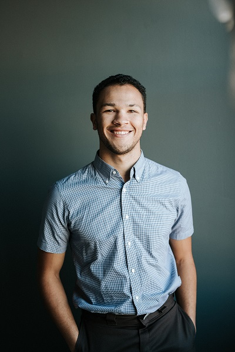

Top quality work
Seriosity is my number 1 criteria in working with my clients.

Reasonable pricing
High-quiality services for a price tag that wont break the bank.
Time eficiency
Time is priceless. Time eficiency and quality merge together.
Ethical
Assosiation with only the best and ethically sourced. No shady bussiness.
My name is Bartos Mihnea Andrei, I am 27 years old. I am an interior designer based in Bistrita-Romania, and I give peoples houses the chance to call them homes. I studied at The Art and Design University of Cluj-Napoca and I specialize in interior design and architecture. I have a Masters Degree in Interior Design, specifically color theory and furniture.
